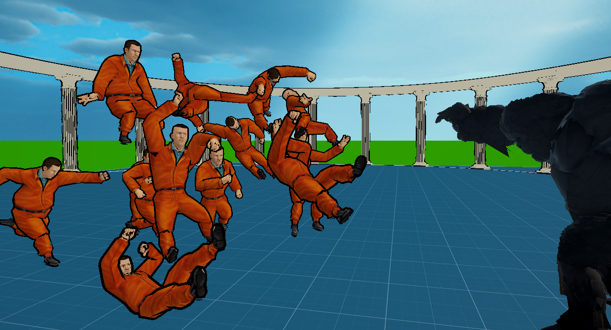

01Projects

Gorilla vs 100 →
An arena survival prototype inspired by the viral "100 Humans vs 1 Gorilla" phenomenon. The sensory-organ damage system, enemy AI, and procedural enemy variation are all built from scratch by me.
UnityC#Enemy AI
MABW →
A combat prototype built around direction-reading, reflexes, and timing. The attack-mode state machine, direction-based stun system, and enemy AI behavior are all built from scratch by me.
UnityC#State Machine
2D Action Platformer →
A fast-paced 2D platformer with 3 levels, built with a 2-person team under a tight deadline. All game mechanics, enemy AI, and UI/UX are built from scratch by me.
UnityC#2D